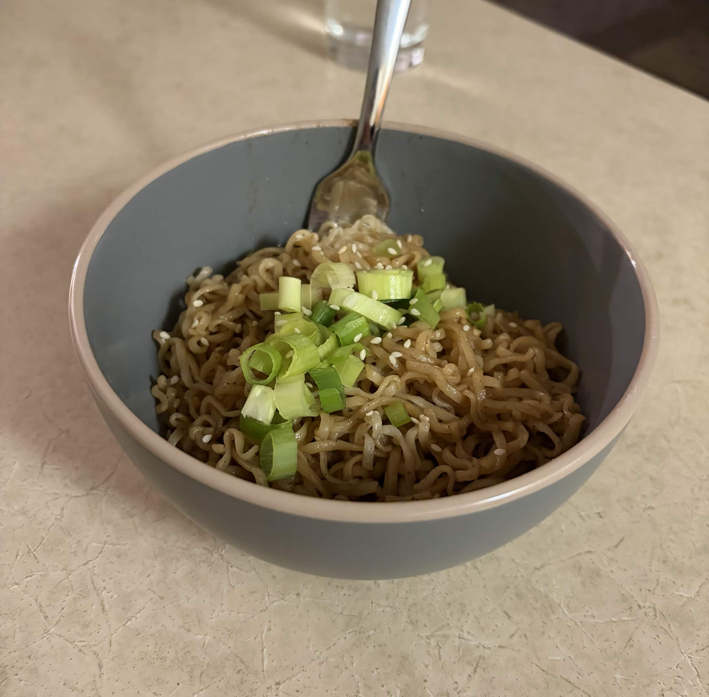
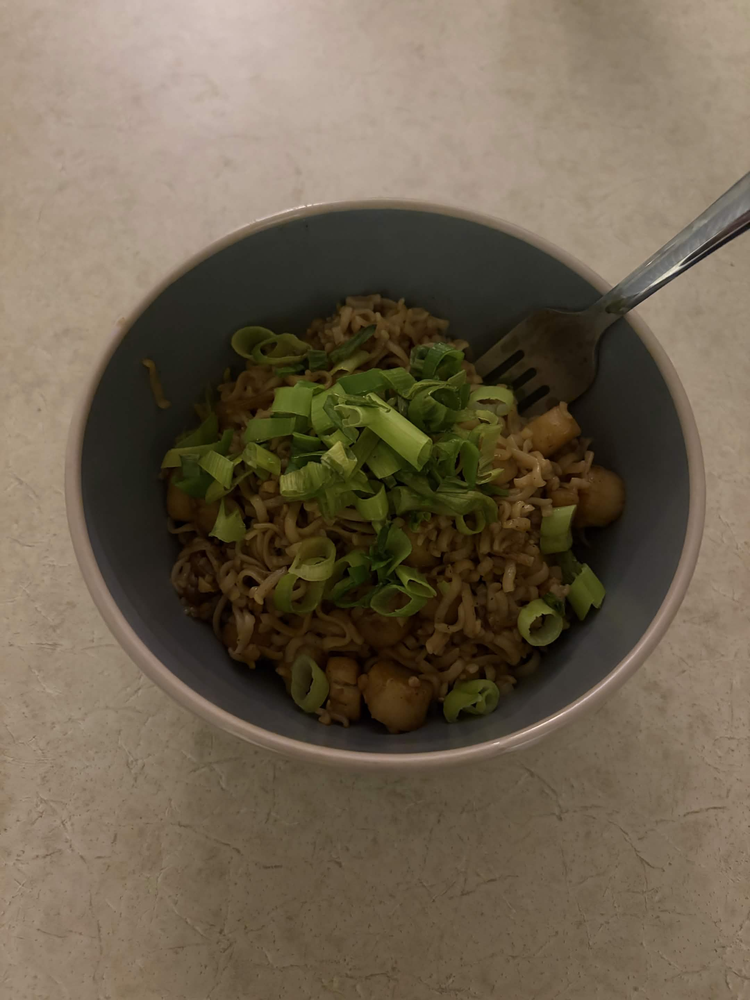

Darcy's Recipe Research
-
The recipe content (at minimum, this includes title, description, ingredients, instructions, source attribution):
Title: Hoisin Garlic Noodles
Author: Hetty Lui McKinnon; published April 16, 2025 on NYT Cooking
Description:
A simple, delicious, and protein-agnostic Asian noodles recipe. A great choice for college students who want a quick and cheap bite to eat! The wheat/egg noodles can also be substituted for rice noodles depending on dietary restrictions.Ingredients:
- Salt and pepper
- 14 ounces dried wheat or egg noodles
- 1/4 cup hoisin sauce
- 2 tablespoons soy sauce
- 1 tablespoon toasted sesame oil
- 2 teaspoons maple syrup or honey
- Vegetable oil
- 6 medium garlic cloves, finely chopped
- 6 scallions, white and green parts separated, thinly sliced
- 4 tablespoons toasted white sesame seeds
-
Sample imagery (this may or may not be actual images from your recipe source, it might instead be samples of photos/illustrations representing the type of images you intend to use):


Real-life results using this recipe. Some color correction would be required for these. -
Three links to recipe websites you have found, with a short (2-3 sentences) written review/critique for each, explaining what makes this site a good reference:
-
NYT Cooking
This website's very limited color scheme provides high contrast and excellent readability. Recipes are categorized based on their difficulty and the type of meal. Each recipe has a descriptive title and image(s), as well as user ratings on a star-based system. The reviews indicate the clarity of the recipe, alongside other factors, which helps users find quality recipes easily. The website also allows users to print (and thereby save) recipes in an easy-to-read format.
-
The Bojon Gourmet
This website features a brief summary of each recipe at the end, which is clearly delineated by a darker page color and printable for personal use. The soft color scheme of the website, with dark text on an off-white background along with neutral tones, creates high contrast without straining the viewer's eyes.
-
Epicurious
This website shows images and price points for its recipes' ingredients, which is helpful in calculating how costly a certain recipe would be to make. It also includes links to substitute ingredients, as well as helpful tips for using certain ingredients, embedded within the recipe text. This helps users adjust and use recipe ingredients beyond the recipe itself if desired. The site also has features allowing saving and printing the recipe.
While the top menu is of the website is organized into easily-understood categories, the homepage is cluttered, with poor alignment of image and text elements.
-
NYT Cooking
-
Three links to non-recipe websites with stylistic or communication techniques that might inform your own design, also with a short written rationale:
-
Artstation
Artstation's explore page utilizes a large grid of images, sourced from artists who use the platform, to describe and advertise their work. This communication technique creates a dynamic visual experience that presents a large quantity of information very quickly, but still allows users to absorb the general content of each image. This could be a useful way to present different pictures of a recipe's final product/dish, as well as its ingredients or individual steps.
-
Quizlet
Quizlet has a very streamlined and minimalistic visual style, with particularly strong organization in its menus. The header menu features icons that visually describe the items within. Icons like these would add interest to the menus and supplement the images used in a recipe page. It would also allow users to differentiate between menu items and navigate the website efficiently.
-
Google Keep
Google Keep organizes information into different compartments using a sticky-note-like system, each with its own title and body text. A similar system could be used in a recipe page to divide different sections, such as the description from the ingredients, and the different steps from each other.
-
Artstation